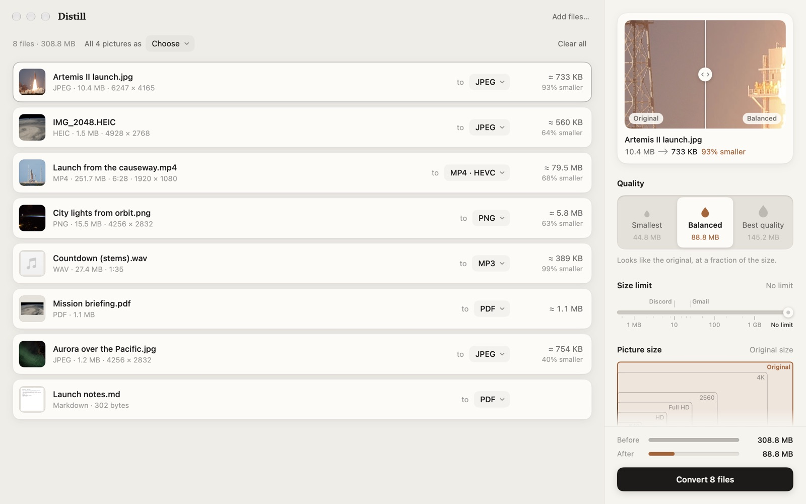
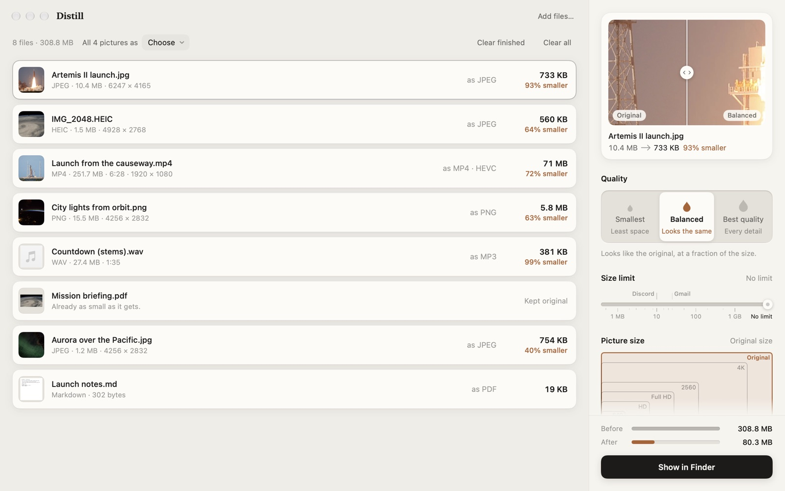
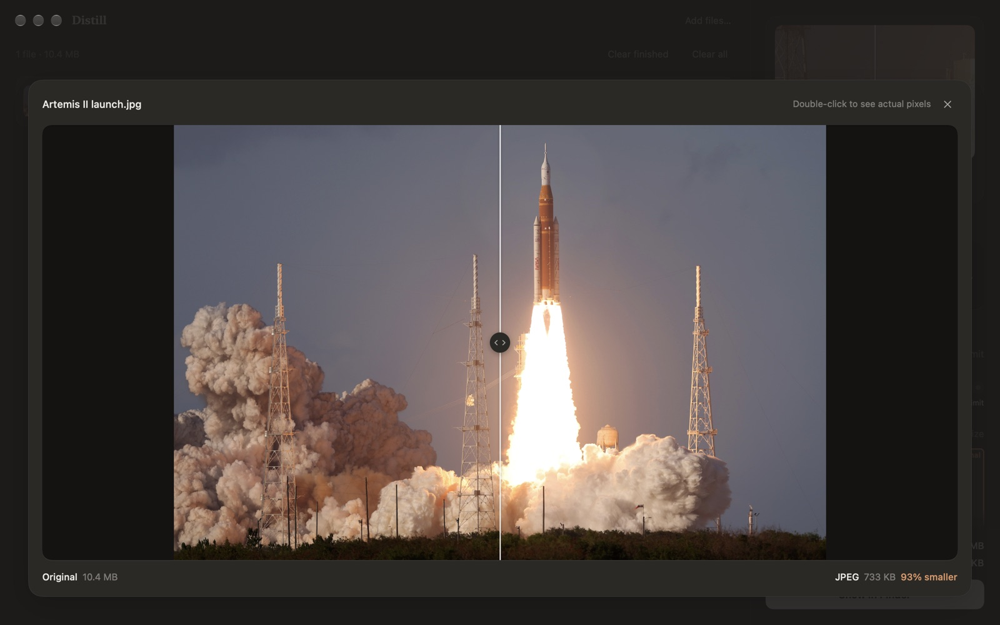
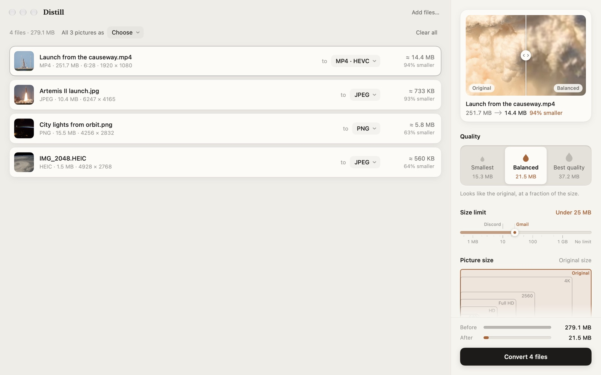
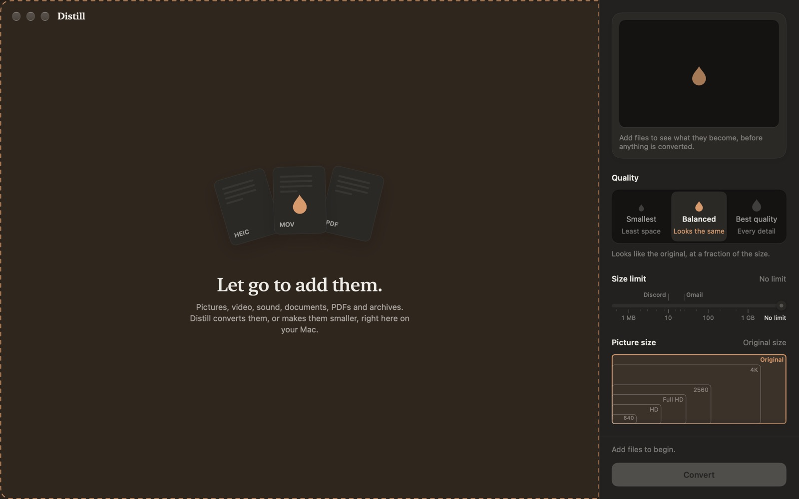

DistillDistill converts and compresses pictures, video, sound, PDFs, documents and archives – right on your Mac. Drop files in and see exactly what each one becomes, and how small, before anything is converted.

Most converters make you guess. Distill does the work in the background and shows you the answer first.
Each file shows what it will weigh afterwards, measured by converting it for real – not guessed.
Slide between the original and the result at full resolution, and judge the quality with your own eyes.
Smallest, Balanced or Best quality – each showing what your whole batch would weigh.
25 MB for Gmail, 10 MB for Discord, or a size you type. Distill lowers quality first, then pixels – never more than it has to.
Drop in a hundred files and send all your photos to one format with a click. Video is encoded by your Mac's own media engine.
Your files never leave your Mac. No account, no uploads, no tracking. One switch removes location and camera details.
A real batch: a 26-megapixel photo, a six-minute video, a WAV recording and more – converted in one go.




Keep the format and make it smaller, or turn it into something else.
| Pictures | JPEG, PNG, WebP, AVIF, HEIC, GIF, TIFF, camera RAW, Photoshop, JPEG XL, SVG, OpenEXR … | JPEG, PNG, WebP, AVIF, HEIC, GIF, TIFF, PDF, BMP, ICO, ICNS |
|---|---|---|
| Video | MP4, MOV, MKV, WebM, AVI, WMV, FLV, MPEG, MTS, 3GP … | MP4 (HEVC, H.264, AV1), WebM, MKV, ProRes MOV, GIF, animated WebP, or just the sound |
| Sound | MP3, AAC, WAV, AIFF, FLAC, ALAC, Ogg, Opus, WMA, AC-3 … | MP3, AAC, Opus, Ogg Vorbis, FLAC, ALAC, WAV, AIFF |
| A smaller PDF, pages as PNG or JPEG, or the text – even from scans | ||
| Documents | Markdown, Word, RTF, OpenDocument, HTML, plain text | PDF, Word, RTF, OpenDocument, HTML, plain text |
| Archives | ZIP, 7z, RAR, tar.gz, tar.xz, ISO … | ZIP, 7z, tar.xz, tar.gz, or unpacked into a folder |
| Data | JSON, YAML, property lists, CSV, TSV | JSON, YAML, property list, CSV, Excel, HTML and Markdown tables |
| Subtitles | SRT, WebVTT, ASS | SRT, WebVTT, ASS |